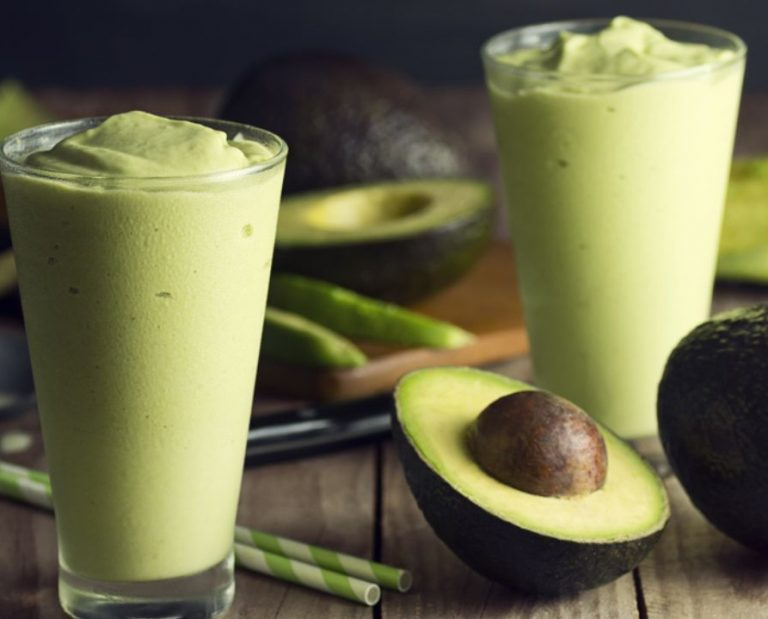

Almoço
O almoço é a refeição principal do dia, onde reunimos energia para enfrentar as atividades diárias. Aqui você encontrará uma variedade de receitas deliciosas e nutritivas para tornar seu almoço especial. Explore as opções e descubra novas ideias para suas refeições.
Pão na Chapa com Requeijão Cremoso
Essa é a opção perfeita para quem busca praticidade com aquele gostinho de café da manhã de rua.
- Ingredientes: 1 pão francês fresco, manteiga e requeijão cremoso.
- Preparo: Corte o pão ao meio, passe uma camada generosa de manteiga e leve à frigideira ou chapa bem quente até dourar. O segredo é colocar uma colher de requeijão por cima assim que tirar do fogo para ele derreter levemente.
Tapioca de Queijo Coalho e Mel
Uma opção sem glúten que se tornou um clássico em todo o Brasil, mistura deliciosa de doce e salgado.
- Ingredientes: Massa pronta para tapioca, queijo coalho ralado ou em fatias finas e um fio de mel.
- Preparo: Peneire a goma na frigideira antiaderente aquecida. Assim que a massa unir, coloque o queijo e deixe derreter. Dobre ao meio e finalize com o mel por cima antes de servir.

Vitamina de Abacate com Aveia
Para quem prefere algo mais refrescante e rápido para "beber" o café da manhã.
- Ingredientes: Meio abacate maduro, 300ml de leite desnatado (ou vegetal), 1 colher de sopa de aveia em flocos e mel ou açúcar a gosto.
- Preparo: Bata tudo no liquidificador até ficar com uma textura bem cremosa e homogênea. Sirva bem gelado.